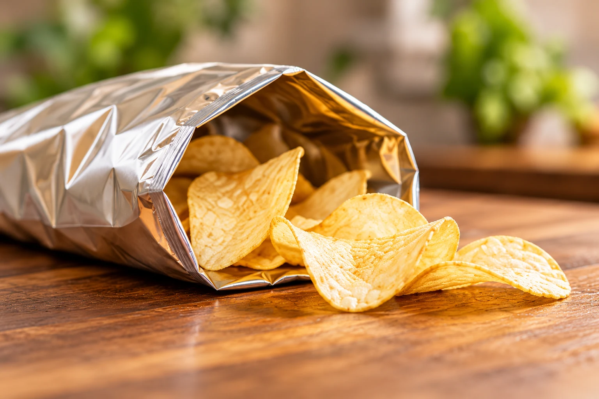
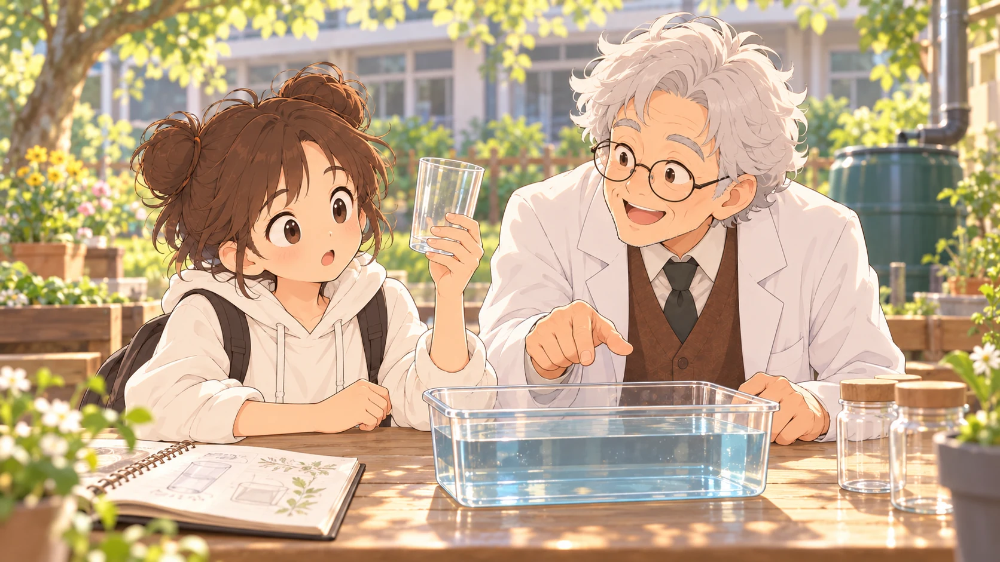
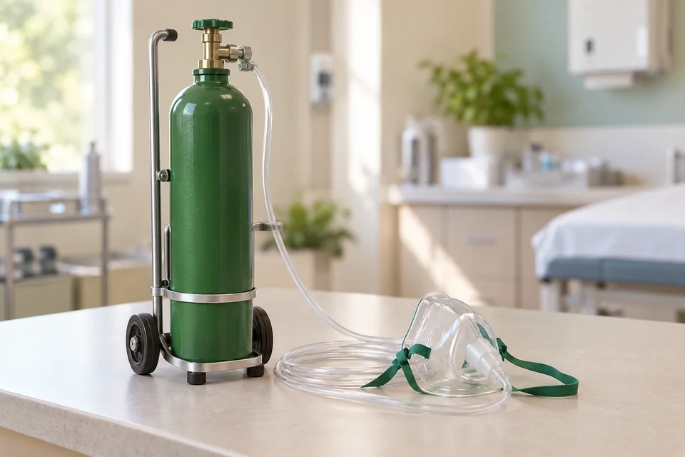
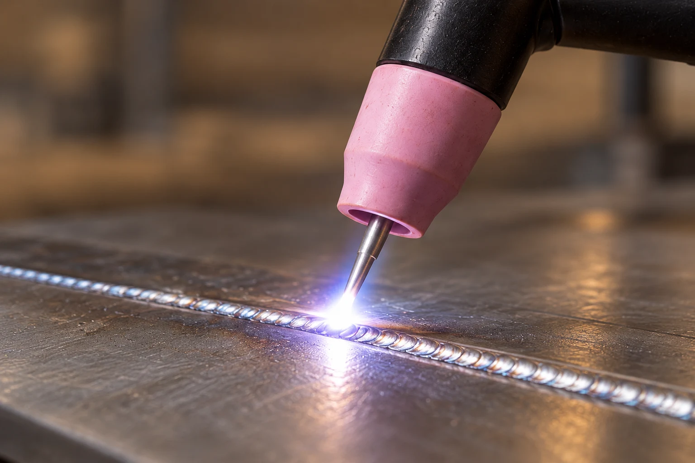
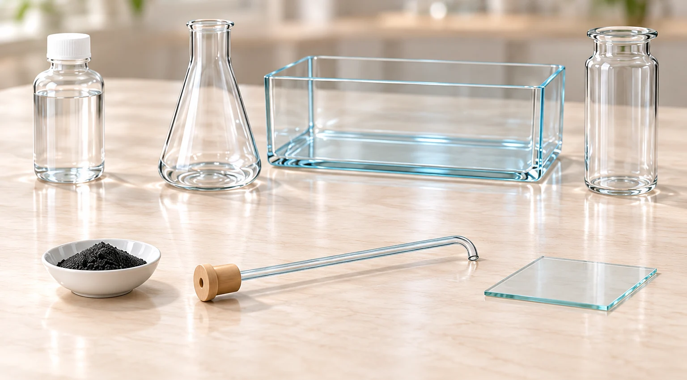

N2Nitrogen
氮氣
空氣中含量最多的氣體
約78%
占全部乾燥空氣的比例
外觀
無色、無臭
反應特性
一般條件下，
相對不易反應
燃燒特性
不可燃，不支持
一般燃燒

生活中的氮氣
食品充氮包裝
降低包裝內的氧氣，有助減緩食品油脂氧化。
小葵和阿公從桌上一只透明杯開始，認識看不見的空氣，再看看不同氣體有什麼性質，以及它們為什麼有不同用途。

空氣占有空間：從眼前的現象出發
杯子泡進水裡，裡面的紙團會不會濕？
一小團乾紙固定在杯底。保持杯口朝下，先把整只杯子浸入水中，再慢慢傾斜，看看紙團、水和氣泡怎麼變。
先觀察杯子直立倒扣和傾斜的差別，再試著拖動杯子看看。
先把整只杯子垂直放入水中。
先拖住杯子直直往下放；放開後，再抓住杯口沿著杯身轉動。
器材側面剖視示意，省略固定杯子的手。空氣保持透明；水位與氣泡為教學模型，未按真實時間或體積比例量測。
氣泡從杯口離開後，水進入杯內。
杯裡的空氣也占有空間。傾斜時，空氣逸出，水進入杯內碰到紙團，紙才會濕。
空氣的組成：比例、性質與生活用途
原來杯子裡也有空氣。裡面都是氧氣嗎？
空氣是多種氣體的混合物。先比較比例，再點選氣體，看看它的性質與用途。
點選上方的粒子、分區或氣體名稱，看看它的性質與生活用途。
空氣中含量最多的氣體
約78%
占全部乾燥空氣的比例
無色、無臭
一般條件下，
相對不易反應
不可燃，不支持
一般燃燒

降低包裝內的氧氣，有助減緩食品油脂氧化。
空氣中含量第二多的氣體
約21%
占全部乾燥空氣的比例
無色、無臭
不易溶於水
本身不可燃，
支持一般燃燒

人體需要氧氣維持生命；醫療上可用於供氧。
乾燥空氣中含量第三多的氣體
約0.93%
占全部乾燥空氣的比例
無色、無臭
一般條件下，
相對不易反應
不可燃，不支持
一般燃燒

減少高溫金屬與周圍空氣接觸，有助減少氧化。
這一區合併氬氣與其餘少量氣體，不全是氬氣。氬氣約占全部乾燥空氣的0.93%；其餘包含二氧化碳等。
包括二氧化碳、氖氣、氦氣、甲烷、氪氣、氫氣與氙氣等。
「永久」不是永遠不變，也不表示不會發生反應。
乾燥空氣仍然包含二氧化碳等變動氣體；只是不計水蒸氣。
氧氣實驗：製備與收集
氧氣在空氣中看不見，要怎麼製備一些，再把它收集起來呢？
用雙氧水來製備，再用排水法收集。留意導管的位置，以及集氣瓶內的水位。
點選物品或名稱，開啟材料介紹。

從材料桌面開始，注入清水、裝滿集氣瓶，遮口倒置並移入水槽，再於水下移開玻璃片、放好導管。
集氣位置已備好；瓶內裝滿水，導管出口留在瓶外水中
先把少量二氧化錳放入空錐形瓶，此時尚未加入雙氧水。
二氧化錳已加入，接著裝好薊頭漏斗與雙孔塞
薊頭漏斗與導管穿過雙孔塞，對準瓶口裝妥。
漏斗與導管已裝妥，接著從漏斗加入雙氧水
從薊頭漏斗加液；漏斗下端浸入液面後形成液封。
液面已淹過漏斗下端，接著先排除原有空氣，暫不收集
起初排出的氣體混有裝置原有空氣，暫不收集。
導管口在瓶外的水中，開始的混合氣不收集
氧氣不易溶於水，可以用排水法收集。
雙氧水足量時，可排出瓶內的水並收集滿瓶氧氣
先在水下撤管、蓋緊玻璃片，再連瓶帶片取出水槽，轉正放到桌面。
集氣瓶已取出並轉正放到桌面，玻璃片持續蓋緊瓶口
點選材料，認識實驗中的用途。
收集滿瓶以雙氧水足量為前提；實際能否集滿取決於濃度、用量與集氣瓶容量。氧氣透明無色；圖中水色、流向標記與動作速度為教學示意，不代表真實用量或反應時間。
在水下蓋好集氣瓶，將樣本標示清楚。
二氧化碳實驗：製備與收集
收集氧氣用了水，二氧化碳也要用一樣的方法嗎？
這次用大理石和稀鹽酸製氣，再用直立的集氣瓶收集。看看原有的空氣從哪裡離開。
點選物品或名稱，開啟材料介紹。
提醒：圖片供辨認器材，實際實驗由教師指導；不提供藥品劑量。
先定位並傾斜錐形瓶，用鑷子逐塊輕放，沿內壁滑入後扶正。
點選圖中的器材，查看介紹與本步用途。
大理石已加入，接著裝好薊頭漏斗與雙孔塞
正在操作的位置近看
提醒：先檢查導管暢通；產氣端的導管入口在液面上方，集氣瓶外的出口也不堵住。
先放入大理石，再把薊頭漏斗與導管穿過雙孔塞裝好。
點選圖中的器材，查看介紹與本步用途。
雙孔塞已塞緊；接著由薊頭漏斗加入稀鹽酸
正在操作的位置近看
提醒：先檢查導管暢通；產氣端的導管入口在液面上方，集氣瓶外的出口也不堵住。
從薊頭漏斗加酸；漏斗下端浸入液面後形成液封。
點選圖中的器材，查看介紹與本步用途。
液封已形成，接著先排除原有空氣
正在操作的位置近看
提醒：先檢查導管暢通；產氣端的導管入口在液面上方，集氣瓶外的出口也不堵住。
起初排出的混合氣先不收集。
點選圖中的器材，查看介紹與本步用途。
先在集氣瓶外排出裝置原有空氣與起始混合氣
正在操作的位置近看
提醒：動畫只示意排氣順序；不能用動畫秒數判定真實裝置已排盡空氣。
二氧化碳比空氣密度大，從瓶底附近送入。
點選圖中的器材，查看介紹與本步用途。
二氧化碳由瓶底附近進入，原有空氣由瓶口向上離開
正在操作的位置近看
提醒：不用滿水倒置瓶，也沒有水位下降。箭頭只是流向標記，二氧化碳本身無色。
先撤出導管，再蓋片並標示樣本；瓶口朝上。
點選圖中的器材，查看介紹與本步用途。
玻璃片已貼合並完整覆蓋瓶口，標示二氧化碳，保持直立
正在操作的位置近看
提醒：導管移出後仍保持排氣暢通；本例在空氣中蓋片，不是在水下封口。
二氧化碳無色；液色、箭頭及動畫時間僅供教學示意，不代表真實用量、反應速率或產率。
從認識材料開始。
本例採向上排空氣法；不能說它絕對不能用排水法收集。玻璃管長度與形狀固定，橡皮管只隨位置彎曲。氣體仍會混合，並非固定分層。製備與收集後到第五區分別取用樣本比較性質。
先用木條比較，再用澄清石灰水檢驗二氧化碳。
兩瓶氣體都收集好了，要怎麼比較性質？
先觀察木條，再用另一份二氧化碳檢驗石灰水。
只通入另一份二氧化碳樣本，與木條觀察分開取樣。
單元小測
從材料區取用器材，直接操作、收集並封存一瓶氣體。
前面用排水法收集氧氣，這次換我試著收集二氧化碳！
二氧化碳會部分溶於水，仍可用排水集氣法收集。從材料區取用需要的物品，放到桌上親手完成製氣、集氣與封存。